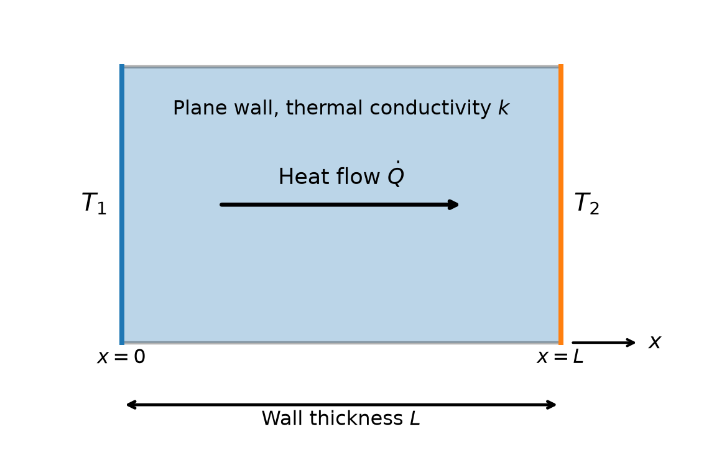

Chapter 6 Heat Transfer Modelling
Many physical phenomena such as heat conduction, vibration of strings, sound propagation, electrostatic potential, are governed by partial differential equations (PDEs).
Unlike ordinary differential equations, PDEs involve derivatives with respect to two or more independent variables. Analytical solutions of PDEs usually require special mathematical techniques. One of the most powerful methods is the combination of Fourier Series and the Method of Separation of Variables.
The basic idea is to decompose a complicated function into an infinite series of sine and cosine functions, which naturally satisfy many boundary conditions encountered in engineering and physics.
6.1 Fourier Series and Separation of Variables for PDEs
6.1.1 Review of Partial Differential Equations
A partial differential equation contains partial derivatives of an unknown function with respect to two or more independent variables.
Classification of Partial Differential Equations
Partial differential equations (PDEs) can be classified in several ways depending on their order, linearity, and whether the equation is homogeneous or nonhomogeneous.
1. First-Order and Higher-Order PDEs
The order of a PDE is determined by the highest-order partial derivative appearing in the equation.
First-order PDE: Contains only first-order partial derivatives as its highest derivatives.
For example, \[ \frac{\partial u}{\partial x}+\frac{\partial u}{\partial y}=0. \]
This is a first-order PDE because the highest derivatives are \(u_x\) and \(u_y\).
Second-order PDE: Contains at least one second-order partial derivative and no derivatives of higher order.
For example, the heat equation \[ \frac{\partial u}{\partial t} = \alpha\frac{\partial^2u}{\partial x^2} \] is a second-order PDE because \(u_{xx}\) is the highest-order derivative.
Higher-order PDE: A PDE is called higher-order when its highest derivative is of order three or greater. For example, \[ \frac{\partial^4 u}{\partial x^4} + \frac{\partial^4 u}{\partial y^4}=0 \] is a fourth-order PDE.
In general, the order is determined solely by the highest derivative present, regardless of the order of the other derivatives.
2. Linear and Nonlinear PDEs
A PDE is linear if the dependent variable (u) and all of its derivatives appear only to the first power and are not multiplied together. The coefficients may depend on the independent variables.
A general second-order linear PDE in two variables can be written as
\[ A(x,y)u_{xx} +B(x,y)u_{xy} +C(x,y)u_{yy} +D(x,y)u_x +E(x,y)u_y +F(x,y)u =G(x,y). \]
For example,
\[ u_{xx}+u_{yy}=0 \]
is linear.
A PDE is nonlinear if \(u\) or its derivatives occur nonlinearly—for example, if they are squared, multiplied together, or appear inside nonlinear functions.
Examples include
\[ u_t+uu_x=0, \]
because \(u\) and \(u_x\) are multiplied together, and
\[ u_{xx}+(u_y)^2=0, \]
because \(u_y\) is squared.
Nonlinear PDEs are generally more difficult to solve because the superposition principle does not apply.
3. Homogeneous and Nonhomogeneous PDEs
For linear PDEs, the terms homogeneous and nonhomogeneous refer to whether an external forcing or source term is present.
A linear PDE can be written abstractly as
\[ L[u]=f, \] where \(L\) is a linear differential operator.
Homogeneous PDE: The right-hand side is zero: \[ L[u]=0. \]
For example, \[ u_{xx}+u_{yy}=0. \]
This is Laplace’s equation and is homogeneous.
Nonhomogeneous PDE: The right-hand side is nonzero: \[ L[u]=f(x,y), \qquad f(x,y)\neq0. \]
For example, \[ u_{xx}+u_{yy}=x^2+y^2. \]
The function \(x^2+y^2\) acts as a source or forcing term.
For homogeneous linear PDEs, the superposition principle applies: if \(u_1\) and \(u_2\) are solutions, then
\[ u=C_1u_1+C_2u_2 \]
is also a solution for arbitrary constants \(C_1\) and \(C_2\).
Summary
| Classification | Meaning | Example |
|---|---|---|
| First-order | Highest derivative has order 1 | \(u_x+u_y=0\) |
| Higher-order | Highest derivative has order 2 or greater | \(u_{xx}+u_{yy}=0\) |
| Linear | \(u\) and its derivatives occur linearly | \(u_t-\alpha u_{xx}=0\) |
| Nonlinear | Nonlinear powers/products/functions of \(u\) or its derivatives occur | \(u_t+uu_x=0\) |
| Homogeneous | Linear PDE has zero forcing term | \(u_{xx}+u_{yy}=0\) |
| Nonhomogeneous | Linear PDE has a nonzero forcing term | \(u_{xx}+u_{yy}=f(x,y)\) |
6.1.2 Fourier Series and Separation of Variables
A Fourier series expresses a periodic function as an infinite sum of sine and cosine functions.
Periodic Functions
A function \(f(x)\) is periodic with period \(T\) if
\[ f(x+T)=f(x) \] for all values of \(x\).
Examples include
\[ \sin x,\qquad \cos x,\qquad \sin 2x,\qquad \cos 3x. \]
Orthogonal Functions
The trigonometric functions satisfy the orthogonality relations
\[ \int_{-\pi}^{\pi} \sin(mx)\sin(nx)\,dx = \begin{cases} 0,&m\neq n,\\ \pi,&m=n. \end{cases} \] Similarly,
\[ \int_{-\pi}^{\pi} \cos(mx)\cos(nx)\,dx = \begin{cases} 0,&m\neq n,\\ \pi,&m=n. \end{cases} \] and
\[ \int_{-\pi}^{\pi} \sin(mx)\cos(nx)\,dx=0. \] These orthogonality properties allow the Fourier coefficients to be computed independently.
Fourier Series Formula
For a function defined on \((-\pi,\pi)\),
\[ f(x) = \frac{a_0}{2} + \sum_{n=1}^{\infty} \left( a_n\cos nx + b_n\sin nx \right), \] where
\[ a_0 = \frac{1}{\pi} \int_{-\pi}^{\pi} f(x)\,dx, \]
\[ a_n = \frac{1}{\pi} \int_{-\pi}^{\pi} f(x)\cos(nx)\,dx, \] and
\[ b_n = \frac{1}{\pi} \int_{-\pi}^{\pi} f(x)\sin(nx)\,dx. \]
Even and Odd Functions
An even function satisfies \(f(-x)=f(x)\), while an odd function satisfies \(f(-x)=-f(x)\).
For even functions, the Fourier series contains only cosine terms, while for odd functions, it contains only sine terms.
Examples of even functions include
\[ x^2,\qquad \cos x,\qquad \cos 3x. \]
Odd functions include: \[ \sin x,\qquad \sin 2x. \]
Half-Range Expansions
The sine and cosine series on \((0,L)\) are also called half-range Fourier expansions because the original function is specified over only one-half of the interval \((-L,L)\).
The half-range sine expansion is \[ f(x) \sim \sum_{n=1}^{\infty} \left[ \frac{2}{L} \int_0^L f(\xi) \sin\left(\frac{n\pi \xi}{L}\right)\,d\xi \right] \sin\left(\frac{n\pi x}{L}\right). \]
The half-range cosine expansion is \[ f(x) \sim \frac{1}{L}\int_0^L f(\xi)\,d\xi + \sum_{n=1}^{\infty} \left[ \frac{2}{L} \int_0^L f(\xi) \cos\left(\frac{n\pi \xi}{L}\right)\,d\xi \right] \cos\left(\frac{n\pi x}{L}\right). \]
The integration variable \(\xi\) is used inside the coefficients to distinguish it from the independent variable \(x\) in the resulting series.
Example of a Fourier Sine Series
Consider \[ f(x)=x, \qquad 0<x<L. \]
Its Fourier sine coefficients are \[ b_n = \frac{2}{L} \int_0^L x\sin\left(\frac{n\pi x}{L}\right)\,dx. \]
Integration by parts gives \[ b_n = \frac{2L}{n\pi}(-1)^{n+1}. \]
Therefore, \[ x \sim \frac{2L}{\pi} \sum_{n=1}^{\infty} \frac{(-1)^{n+1}}{n} \sin\left(\frac{n\pi x}{L}\right), \qquad 0<x<L. \]
Example of a Fourier Cosine Series
For the same function \[ f(x)=x, \qquad 0<x<L, \] the cosine coefficients are \[ a_0 = \frac{2}{L}\int_0^L x\,dx =L, \] and \[ a_n = \frac{2}{L} \int_0^L x\cos\left(\frac{n\pi x}{L}\right)\,dx. \]
After integration, \[ a_n = \frac{2L}{n^2\pi^2} \left[(-1)^n-1\right]. \]
Thus, \[ a_n = \begin{cases} 0, & n \text{ even},\\[4pt] -\dfrac{4L}{n^2\pi^2}, & n \text{ odd}. \end{cases} \]
The Fourier cosine series is therefore \[ x \sim \frac{L}{2} - \frac{4L}{\pi^2} \sum_{\substack{n=1\\n\text{ odd}}}^{\infty} \frac{1}{n^2} \cos\left(\frac{n\pi x}{L}\right), \qquad 0<x<L. \]
Equivalently, \[ x \sim \frac{L}{2} - \frac{4L}{\pi^2} \sum_{m=0}^{\infty} \frac{1}{(2m+1)^2} \cos\left(\frac{(2m+1)\pi x}{L}\right). \]
Convergence of Fourier Series
If \(f(x)\) and its derivative are piecewise continuous, its Fourier series converges at an interior point \(x\) to \[ \frac{f(x^-)+f(x^+)}{2}. \]
At a point where \(f\) is continuous, \[ \frac{f(x^-)+f(x^+)}{2}=f(x), \] so the Fourier series converges to the function itself. At a jump discontinuity, the series converges to the average of the left-hand and right-hand limits. Oscillations may occur near a discontinuity; this behavior is known as the Gibbs phenomenon.
For a half-range sine series, the endpoint values are determined by the odd periodic extension. In particular, the series tends to zero at \(x=0\) and \(x=L\) when interpreted through that extension.
For a half-range cosine series, the endpoint behavior is determined by the even periodic extension.
Parseval’s Identity
For the Fourier sine series \[ f(x) \sim \sum_{n=1}^{\infty} b_n\sin\left(\frac{n\pi x}{L}\right), \] Parseval’s identity is \[ \int_0^L |f(x)|^2\,dx = \frac{L}{2} \sum_{n=1}^{\infty}b_n^2. \]
For the Fourier cosine series \[ f(x) \sim \frac{a_0}{2} + \sum_{n=1}^{\infty} a_n\cos\left(\frac{n\pi x}{L}\right), \] Parseval’s identity becomes \[ \int_0^L |f(x)|^2\,dx = \frac{L}{4}a_0^2 \frac{L}{2} \sum_{n=1}^{\infty}a_n^2. \]
General Separation-of-Variables Procedure
The method of separation of variables is used to solve certain linear partial differential equations by expressing the unknown function as a product of functions, each depending on only one independent variable.
For a function \[ u=u(x,y), \] assume a separated solution of the form \[ u(x,y)=X(x)Y(y), \] where \(X\) depends only on \(x\) and \(Y\) depends only on \(y\).
The general procedure is as follows.
Step 1: Write the PDE and Boundary Conditions
Consider a second-order linear PDE defined in a rectangular domain \[ 0<x<L, \qquad 0<y<H. \]
A common example is Laplace’s equation: \[ \frac{\partial^2 u}{\partial x^2} + \frac{\partial^2 u}{\partial y^2} =0. \]
The boundary conditions must also be specified. For example, \[ u(0,y)=0, \qquad u(L,y)=0, \] \[ u(x,0)=0, \qquad u(x,H)=f(x). \]
Step 2: Assume a Product Solution
Assume \[ u(x,y)=X(x)Y(y). \]
Then \[ \frac{\partial^2 u}{\partial x^2} = X''(x)Y(y), \] and \[ \frac{\partial^2 u}{\partial y^2} = X(x)Y''(y). \]
\[ X''(x)Y(y)+X(x)Y''(y)=0. \]
Step 3: Separate the Variables
Divide by \(X(x)Y(y)\), assuming that neither function is identically zero: \[ \frac{X''(x)}{X(x)} + \frac{Y''(y)}{Y(y)} =0. \]
Therefore, \[ \frac{X''(x)}{X(x)} = -\frac{Y''(y)}{Y(y)}. \]
The left-hand side depends only on \(x\), while the right-hand side depends only on \(y\). Hence, both sides must be equal to a constant, called the separation constant.
Write \[ \frac{X''}{X} = -\lambda, \qquad \frac{Y''}{Y} = \lambda. \]
This gives the two ordinary differential equations \[ X''+\lambda X=0 \] and \[ Y''-\lambda Y=0. \]
Step 4: Consider the Possible Signs of the Separation Constant
The form of the solutions depends on whether \(\lambda\) is positive, zero, or negative.
Case 1: \(\lambda=\mu^2>0\)
The equations become \[ X''+\mu^2X=0 \] and \[ Y''-\mu^2Y=0. \]
Their general solutions are \[ X(x)=A\cos(\mu x)+B\sin(\mu x) \] and \[ Y(y)=C\cosh(\mu y)+D\sinh(\mu y). \]
Equivalently, \[ Y(y)=C_1e^{\mu y}+C_2e^{-\mu y}. \]
Case 2: \(\lambda=0\)
The equations become \[ X''=0, \qquad Y''=0. \]
Thus, \[ X(x)=A+Bx \] and \[ Y(y)=C+Dy. \]
Case 3: \(\lambda=-\mu^2<0\)
The equations become \[ X''-\mu^2X=0 \] and \[ Y''+\mu^2Y=0. \]
Their general solutions are \[ X(x)=Ae^{\mu x}+Be^{-\mu x} \] and \[ Y(y)=C\cos(\mu y)+D\sin(\mu y). \]
Step 5: Apply the Homogeneous Boundary Conditions
Using \[ u(0,y)=0, \qquad u(L,y)=0, \] and the separated form \[ u(x,y)=X(x)Y(y), \] we obtain \[ X(0)=0, \qquad X(L)=0. \]
For the positive separation constant case, \[ X(x)=A\cos(\mu x)+B\sin(\mu x). \]
From \(X(0)=0\), \[ A=0. \]
Therefore, \[ X(x)=B\sin(\mu x). \]
From \(X(L)=0\), \[ B\sin(\mu L)=0. \]
For a nontrivial solution, \(B\neq 0\), so \[ \sin(\mu L)=0. \]
Hence, \[ \mu L=n\pi, \qquad n=1,2,3,\ldots, \] and therefore \[ \mu_n=\frac{n\pi}{L}. \]
The corresponding eigenfunctions are \[ X_n(x) = \sin\left(\frac{n\pi x}{L}\right). \]
Step 6: Solve the Remaining ODE
For each eigenvalue \[ \mu_n=\frac{n\pi}{L}, \] the equation for \(Y\) is \[ Y_n''-\mu_n^2Y_n=0. \] Thus, \[ Y_n(y) = C_n\cosh\left(\frac{n\pi y}{L}\right) + D_n\sinh\left(\frac{n\pi y}{L}\right). \]
If the boundary condition is \[ u(x,0)=0, \] then \[ Y_n(0)=0. \]
Since \[ Y_n(0)=C_n, \] we obtain \[ C_n=0. \]
Therefore, \[ Y_n(y) = D_n\sinh\left(\frac{n\pi y}{L}\right). \]
A separated solution is then \[ u_n(x,y) = D_n \sin\left(\frac{n\pi x}{L}\right) \sinh\left(\frac{n\pi y}{L}\right). \]
Step 7: Form a Superposition of Separated Solutions
Because Laplace’s equation is linear, a sum of separated solutions is also a solution. Therefore, \[ u(x,y) = \sum_{n=1}^{\infty} D_n \sin\left(\frac{n\pi x}{L}\right) \sinh\left(\frac{n\pi y}{L}\right). \]
This series automatically satisfies the three homogeneous boundary conditions \[ u(0,y)=0, \qquad u(L,y)=0, \qquad u(x,0)=0. \]
Step 8: Apply the Nonhomogeneous Boundary Condition
Apply \[ u(x,H)=f(x). \] Then \[ f(x) = \sum_{n=1}^{\infty} D_n \sinh\left(\frac{n\pi H}{L}\right) \sin\left(\frac{n\pi x}{L}\right). \]
This is a Fourier sine series for \(f(x)\). Its coefficients satisfy \[ D_n \sinh\left(\frac{n\pi H}{L}\right) = \frac{2}{L} \int_0^L f(x) \sin\left(\frac{n\pi x}{L}\right)\,dx. \]
Therefore, \[ D_n = \frac{2} {L\sinh\left(\dfrac{n\pi H}{L}\right)} \int_0^L f(\xi) \sin\left(\frac{n\pi \xi}{L}\right)\,d\xi. \]
The variable \(\xi\) is used as the integration variable to distinguish it from the independent variable \(x\).
The solution is
\[ u(x,y) = \sum_{n=1}^{\infty} D_n \sin\left(\frac{n\pi x}{L}\right) \sinh\left(\frac{n\pi y}{L}\right). \]
Remark: The type of homogeneous boundary conditions determines the eigenfunctions.
| Boundary Conditions | Typical Eigenfunctions |
|---|---|
| \(X(0)=0,\; X(L)=0\) | \(\displaystyle \sin\!\left(\frac{n\pi x}{L}\right)\) |
| \(X'(0)=0,\; X'(L)=0\) | \(\displaystyle \cos\!\left(\frac{n\pi x}{L}\right)\) |
| \(X(0)=0,\; X'(L)=0\) | \(\displaystyle \sin\!\left(\frac{(n+\frac12)\pi x}{L}\right)\) |
| \(X'(0)=0,\; X(L)=0\) | \(\displaystyle \cos\!\left(\frac{(n+\frac12)\pi x}{L}\right)\) |
Thus, the boundary conditions determine the appropriate Fourier expansion and the allowable eigenvalues.
6.2 Mathematical Modeling of Heat Transfer
Heat transfer is the study of the transport of thermal energy resulting from a temperature difference. Thermal energy naturally flows from a region of higher temperature to one of lower temperature until thermal equilibrium is reached. Understanding temperature fields and heat transfer is essential in many natural and industrial processes, including melting and solidification, combustion, and frost penetration into the ground. Mathematical modeling provides a systematic framework for describing, analyzing, and predicting temperature distributions and heat-transfer rates in engineering systems. Common units of heat transfer include the joule (J), calorie (cal), and kilocalorie (kcal), while heat-transfer rate is commonly expressed in kilowatts (kW).
A complete mathematical model of heat transfer generally begins by identifying the relevant modes of heat transfer and applying the principle of conservation of energy. These considerations are used to formulate an appropriate governing differential equation that describes how temperature varies with position and time. The model must also include suitable initial and boundary conditions that represent the physical conditions of the system. Once the mathematical problem has been established, analytical methods may be used when an exact solution is possible, while numerical techniques are often required for more complex geometries, material properties, or boundary conditions.
6.2.1 Basic Modes of Heat Transfer
Heat can be transferred through three basic mechanisms: conduction, convection, and radiation. In many practical systems, two or more of these heat-transfer mechanisms occur simultaneously. Identifying the dominant mode of heat transfer is an important first step in developing an appropriate mathematical model for a thermal system.
Conduction
The mechanism of heat conduction is associated with interactions and collisions between atoms and molecules. Particles in a region of higher temperature possess greater kinetic energy and therefore move or vibrate more rapidly. When these energetic particles interact with slower particles in a colder region, energy is transferred from the faster particles to the slower ones. As a result, thermal energy is transported from regions of higher temperature to regions of lower temperature.
When a temperature gradient exists within a material, heat flows naturally in the direction of decreasing temperature. This process is known as conduction heat transfer. Conduction therefore refers to the transfer of thermal energy through a stationary medium as a result of molecular interactions and temperature differences.
The heat flux \(\mathbf{q}\) is a vector quantity whose direction represents the direction of heat flow. Its magnitude describes the amount of heat transferred per unit area per unit time and is measured in \(\mathrm{W/m^2}\). The ability of a material to conduct heat is characterized by its thermal conductivity, denoted by \(k\), with units of \(\mathrm{W/(m,^{\circ}C)}\) or equivalently \(\mathrm{W/(m,K)}\).
Fourier’s Law of Heat Conduction
Fourier’s law describes the relationship between heat transfer and the temperature gradient. In terms of heat-transfer rate through a surface, it can be written as
\[ \mathbf{Q}=-kA_s\nabla T, \]
where \(\mathbf{Q}\) is the heat-transfer-rate vector, \(k\) is the thermal conductivity of the material, \(A_s\) is the surface area perpendicular to the direction of heat flow, and \(\nabla T\) is the temperature gradient.
The negative sign indicates that heat flows in the direction of decreasing temperature, from a hotter region toward a colder region.
In terms of heat flux, Fourier’s law is
\[ \mathbf{q}=-k\nabla T. \]
Thus, Fourier’s law states that the heat-transfer rate through a material is proportional to the temperature gradient and the cross-sectional area perpendicular to the direction of heat flow.
For one-dimensional heat conduction in the \(x\)-direction, the heat flux is
\[ q_x=-k\frac{dT}{dx}. \]
If the total heat-transfer rate through an area \(A_s\) is required, then
\[ Q_x=-kA_s\frac{dT}{dx}. \]
Again, the negative sign indicates that heat flows from a region of higher temperature to a region of lower temperature.
Convection
Convection is the transfer of thermal energy through the bulk motion of a fluid, such as a liquid or gas. It typically involves a combination of heat conduction near a solid surface and the movement of the fluid, which transports thermal energy from one location to another.
In a typical convective heat-transfer process, a surface at a higher temperature transfers heat to an adjacent fluid. As the fluid moves, it carries the transferred thermal energy away from the surface. Similarly, when a cold surface is exposed to a warmer fluid, heat is transferred from the fluid to the surface.
Examples of convection include boiling water, land and sea breezes, air conditioners, blood circulation, melting of chilled drinks, convection ovens, hot-air balloons, refrigerators, car radiators, and the defrosting of frozen meat.
The heat flux due to convection in a moving fluid at a point \(P\) represents the amount of thermal energy crossing a unit area per unit time. It can be interpreted as the thermal energy carried by the fluid as it moves across that area. If \(\varepsilon\) denotes the thermal energy per unit volume and \(\mathbf{v}\) is the fluid velocity, then the convective heat flux is
\[ \mathbf{q}_c=\varepsilon\mathbf{v}. \]
Thus, the convective transport of thermal energy depends on both the amount of thermal energy stored in the fluid and the velocity at which the fluid moves.
Convection also describes the transfer of heat between a solid surface and an adjacent moving fluid. This process involves both thermal conduction in the fluid near the surface and the bulk motion of the fluid. The convective heat-transfer rate is commonly described by Newton’s law of cooling:
\[ Q=hA_s(T_s-T_\infty), \]
where \(h\) is the convective heat-transfer coefficient, \(A_s\) is the surface area, \(T_s\) is the surface temperature, and \(T_\infty\) is the temperature of the fluid away from the surface. The sign and magnitude of \(T_s-T_\infty\) determine the direction and rate of heat transfer. When \(T_s>T_\infty\), heat is transferred from the surface to the fluid; when \(T_s<T_\infty\), heat is transferred from the fluid to the surface.
A familiar example is heating a pot of water over a flame. Water near the bottom of the pot is heated first, causing it to expand and become less dense. The warmer water rises while the cooler, denser water moves downward. This continuous movement produces a circulation pattern known as a convection current, which helps distribute thermal energy throughout the liquid.
Radiation
Radiation is the transfer of thermal energy through electromagnetic waves. Unlike conduction and convection, radiation does not require a material medium and can therefore occur through a vacuum. For example, thermal energy from the Sun reaches the Earth primarily through radiation.
Stefan–Boltzmann Law of Thermal Radiation
The thermal radiation emitted by an ideal blackbody is described by the Stefan–Boltzmann law:
\[ \dot{Q}_{\mathrm{rad}} = \sigma A_sT_s^4, \]
where \(\dot{Q}_{\mathrm{rad}}\) is the rate of thermal radiation, \(\sigma\) is the Stefan–Boltzmann constant, \(A_s\) is the radiating surface area, and \(T_s\) is the absolute surface temperature, measured in kelvin (K).
The Stefan–Boltzmann constant is
\[ \sigma = 5.67\times10^{-8}; \mathrm{W/(m^2,K^4)}. \]
For a real surface exchanging radiation with large surroundings, the net radiative heat-transfer rate is
\[ \dot{Q}_{\mathrm{rad}} = \varepsilon\sigma A_s \left( T_s^4-T_{\mathrm{sur}}^4 \right), \]
where \(\varepsilon\) is the surface emissivity, with \(0\leq\varepsilon\leq1\), and \(T_{\mathrm{sur}}\) is the absolute temperature of the surroundings.
If \(T_s>T_{\mathrm{sur}}\), the surface experiences a net loss of thermal energy by radiation. If \(T_s<T_{\mathrm{sur}}\), the surface experiences a net gain of thermal energy from its surroundings.
6.2.2 The Fundamental Law of Conservation
The mathematical formulation of a heat-transfer problem is based on the conservation of energy. This principle states that energy cannot be created or destroyed; it can only be transferred, converted from one form to another, or stored within a system.
For a general control volume, the energy balance can be expressed as
\[ \text{Energy entering} - \text{Energy leaving} + \text{Energy generated} = \text{Energy accumulated}. \]
In rate form, the conservation equation becomes
\[ \dot{E}_{\mathrm{in}} - \dot{E}_{\mathrm{out}} + \dot{E}_{\mathrm{gen}} = \frac{dE_{\mathrm{stored}}}{dt}, \]
where \(\dot{E}_{\mathrm{in}}\) is the rate at which energy enters the control volume, \(\dot{E}_{\mathrm{out}}\) is the rate at which energy leaves the control volume, \(\dot{E}_{\mathrm{gen}}\) is the rate of energy generation within the control volume, and \(\dfrac{dE_{\mathrm{stored}}}{dt}\) is the rate of energy accumulation or storage within the control volume.
For a stationary solid with constant density \(\rho\) and specific heat capacity \(c_p\), the rate of thermal-energy accumulation per unit volume is
\[ \rho c_p\frac{\partial T}{\partial t}, \]
where \(T\) is the temperature and \(t\) is time.
The conservation of energy principle, when combined with Fourier’s law of heat conduction, provides the basis for deriving the governing heat-conduction equation. This equation describes how the temperature within a material varies with position and time as a result of heat conduction, internal heat generation, and thermal-energy storage.
6.2.3 Governing PDE for Heat Transfer
For a homogeneous, isotropic solid, the general three-dimensional heat equation is
\[ \rho c_p\frac{\partial T}{\partial t} = \nabla\cdot\left(k\nabla T\right) + \dot{q}_v, \]
where \(\rho\) is the density of the material, \(c_p\) is the specific heat capacity, \(T\) is the temperature, \(k\) is the thermal conductivity, and \(\dot{q}_v\) is the volumetric heat-generation rate.
When the thermal conductivity \(k\) is constant, the equation simplifies to
\[ \rho c_p\frac{\partial T}{\partial t} = k\nabla^2T+\dot{q}_v. \]
Introducing the thermal diffusivity
\[ \alpha=\frac{k}{\rho c_p}, \]
the heat equation can be written as
\[ \frac{\partial T}{\partial t} = \alpha\nabla^2T + \frac{\dot{q}_v}{\rho c_p}. \]
Thermal diffusivity measures how rapidly heat spreads through a material. A material with a large value of \(\alpha\) responds more quickly to changes in temperature than a material with a small value of \(\alpha\).
For steady-state heat transfer, the temperature at each point does not change with time. Therefore,
\[ \frac{\partial T}{\partial t}=0, \]
and the governing equation reduces to
\[ \nabla^2T+\frac{\dot{q}_v}{k}=0. \]
This is known as Poisson’s equation for steady-state heat conduction with internal heat generation.
If there is no internal heat generation, so that \(\dot{q}_v=0\), the equation further reduces to Laplace’s equation:
\[ \nabla^2T=0. \]
6.2.4 Boundary Conditions
Boundary conditions describe the thermal behavior at the boundaries of the solution domain. Together with the governing differential equation, they are required to obtain a unique temperature distribution. Common thermal boundary conditions include the following.
1. Specified Temperature or Dirichlet Condition
The temperature at the boundary is prescribed:
\[ T=T_s, \]
where \(T_s\) is the specified surface temperature.
2. Specified Heat Flux or Neumann Condition
The heat flux normal to the boundary is prescribed:
\[ -k\frac{\partial T}{\partial n}=q_s'', \]
where \(q_s''\) is the specified surface heat flux and \(\partial T/\partial n\) represents the temperature gradient in the direction normal to the surface.
An insulated or adiabatic boundary is an important special case in which no heat crosses the boundary. Therefore,
\[ q_s''=0, \]
which gives
\[ \frac{\partial T}{\partial n}=0. \]
3. Convective or Robin Condition
When a solid surface exchanges heat with a surrounding fluid by convection, the boundary condition can be written as
\[ -k\frac{\partial T}{\partial n} = h\left(T_s-T_\infty\right), \]
where \(h\) is the convective heat-transfer coefficient, \(T_s\) is the surface temperature, and \(T_\infty\) is the temperature of the surrounding fluid.
This condition relates heat conduction at the surface to heat transfer by convection between the surface and the fluid.
4. Radiative Boundary Condition
When heat is exchanged between a surface and its surroundings by thermal radiation, the boundary condition is
\[ -k\frac{\partial T}{\partial n} =\varepsilon\sigma \left(T_s^4-T_{\mathrm{sur}}^4\right), \]
where \(\varepsilon\) is the surface emissivity, \(\sigma\) is the Stefan–Boltzmann constant, \(T_s\) is the absolute surface temperature, and \(T_{\mathrm{sur}}\) is the absolute temperature of the surroundings.
Because temperature appears to the fourth power, the radiative boundary condition is nonlinear.
Initial Condition
For a transient heat-transfer problem, the temperature distribution must also be specified at an initial time, usually \(t=0\). The initial condition is written as
\[ T(\mathbf{x},0)=T_i(\mathbf{x}), \]
where \(T_i(\mathbf{x})\) represents the initial temperature distribution throughout the solution domain.
Thus, a complete transient heat-transfer problem generally consists of the governing heat equation, appropriate boundary conditions, and an initial condition.
Examples
Example problems demonstrate how the governing heat equation and associated boundary conditions are adapted to particular physical situations. Heat-transfer problems are commonly classified as steady-state or unsteady-state (transient) problems, depending on whether the temperature varies with time.
Steady-State Heat Transfer
In steady-state heat transfer, the temperature at every point in a system remains constant with time. The temperature may still vary from one position to another, but at any fixed location there is no temporal change. Therefore,
\[ \frac{\partial T}{\partial t}=0. \]
Under steady-state conditions, there is no accumulation of thermal energy within the material. The rate of heat entering a region must therefore balance the rate of heat leaving it, provided there is no internal heat generation.
One-Dimensional Conduction Through a Plane Wall
Consider a plane wall of thickness \(L\) and cross-sectional area \(A\). Assume that
- heat transfer occurs only in the \(x\)-direction,
- the process is at steady state,
- the thermal conductivity \(k\) is constant,
- there is no internal heat generation, and
- the wall surfaces are maintained at constant temperatures.
Under these assumptions, the general heat-conduction equation reduces to
\[ \frac{d^2T}{dx^2}=0. \]
Integrating once with respect to \(x\) gives
\[ \frac{dT}{dx}=C_1, \]
and integrating a second time gives
\[ T(x)=C_1x+C_2, \]
where \(C_1\) and \(C_2\) are constants determined from the boundary conditions.
Suppose the wall occupies the region
\[ 0\leq x\leq L, \]
with prescribed surface temperatures
\[ T(0)=T_1 \]
and
\[ T(L)=T_2. \]
Applying the first boundary condition,
\[ T(0)=C_2=T_1, \]
so that
\[ C_2=T_1. \]
Applying the second boundary condition,
\[ T_2=C_1L+T_1, \]
which gives
\[ C_1=\frac{T_2-T_1}{L}. \]
Therefore, the temperature distribution within the wall is
\[ \boxed{ T(x)=T_1+\frac{T_2-T_1}{L}x }. \]
This result shows that the temperature varies linearly through a plane wall when the thermal conductivity is constant and there is no internal heat generation.
Heat-Transfer Rate
Fourier’s law for one-dimensional heat conduction is
\[ \dot{Q}=-kA\frac{dT}{dx}. \]
Since
\[ \frac{dT}{dx}=\frac{T_2-T_1}{L}, \]
the heat-transfer rate becomes
\[ \dot{Q} = -kA\frac{T_2-T_1}{L}. \]
Equivalently,
\[ \boxed{ \dot{Q} = \frac{kA}{L}(T_1-T_2) }. \]
Here, \(k\) is the thermal conductivity, \(A\) is the cross-sectional area perpendicular to the direction of heat flow, and \(L\) is the wall thickness. If \(T_1>T_2\), heat flows from the surface at \(x=0\) toward the surface at \(x=L\), consistent with the principle that heat flows from higher to lower temperature.
The corresponding heat flux is
\[ \boxed{ q''=\frac{\dot{Q}}{A} = \frac{k}{L}(T_1-T_2) }. \]
The plane-wall result can also be written using the concept of thermal resistance:
\[ R_{\mathrm{cond}}=\frac{L}{kA}. \]
Hence,
\[ \boxed{ \dot{Q} = \frac{T_1-T_2}{R_{\mathrm{cond}}} }. \]
This thermal-resistance form is particularly useful when analyzing systems containing several material layers or multiple heat-transfer mechanisms.
Unsteady-State Heat Transfer
In unsteady-state, or transient, heat transfer, the temperature changes with both position and time. For one-dimensional conduction with constant thermal properties and no internal heat generation, the governing equation is
\[ \frac{\partial T}{\partial t} = \alpha\frac{\partial^2T}{\partial x^2}, \]
where \(\alpha\) is the thermal diffusivity.
Analytical solutions to this equation can often be obtained using the method of separation of variables. The resulting temperature field is commonly represented as a Fourier series of the form
\[ T(x,t) = \sum_{n=1}^{\infty} C_nX_n(x)e^{-\alpha\lambda_n^2t}, \]
where \(X_n(x)\) are the spatial eigenfunctions, \(\lambda_n\) are the corresponding eigenvalues, and \(C_n\) are Fourier coefficients determined from the initial temperature distribution.
Fourier-series solutions are especially useful for transient heat-conduction problems involving finite geometries such as plane walls, cylinders, and spheres.
Method of Separation of Variables
The method of separation of variables converts a partial differential equation into separate ordinary differential equations by assuming that the solution can be expressed as a product of functions, each depending on only one independent variable.
For the one-dimensional transient heat equation, assume
\[ T(x,t)=X(x)\Theta(t), \]
where \(X(x)\) depends only on position and \(\Theta(t)\) depends only on time.
Substituting into
\[ \frac{\partial T}{\partial t} = \alpha\frac{\partial^2T}{\partial x^2} \]
gives
\[ X\frac{d\Theta}{dt} = \alpha\Theta\frac{d^2X}{dx^2}. \]
Dividing by \(\alpha X\Theta\) gives
\[ \frac{1}{\alpha\Theta} \frac{d\Theta}{dt} = \frac{1}{X} \frac{d^2X}{dx^2}. \]
Since the left-hand side depends only on \(t\) and the right-hand side depends only on \(x\), both sides must be equal to the same constant. For the standard heat-conduction eigenvalue problem, this constant is written as \(-\lambda^2\):
\[ \frac{1}{\alpha\Theta} \frac{d\Theta}{dt} = \frac{1}{X} \frac{d^2X}{dx^2} = -\lambda^2. \]
This produces two ordinary differential equations.
The spatial equation is
\[ \frac{d^2X}{dx^2}+\lambda^2X=0, \]
while the time equation is
\[ \frac{d\Theta}{dt} + \alpha\lambda^2\Theta=0. \]
The boundary conditions determine the allowable eigenvalues \(\lambda_n\) and eigenfunctions \(X_n(x)\), while the initial condition determines the Fourier coefficients \(C_n\). Combining these results produces the complete transient temperature distribution.
Numerical Techniques
Analytical solutions are generally limited to simple geometries, constant material properties, and idealized boundary conditions. Numerical techniques are used when the geometry, properties, heat sources, or boundary conditions are too complex for a closed-form solution.
Common numerical methods include the finite-difference method, finite-volume method, and finite-element method. These methods divide the physical domain into discrete points, control volumes, or elements and approximate the governing differential equation by a system of algebraic equations.
For example, the second derivative in a one-dimensional finite-difference model may be approximated by \[ \left.\frac{d^2T}{dx^2}\right|_i \approx \frac{T_{i+1}-2T_i+T_{i-1}}{\Delta x^2}. \]
The resulting algebraic equations are solved to obtain approximate temperatures at the discrete locations throughout the domain.
Application of Heat Equation
- Cooling of electronic devices.
Consider a thin electronic chip that generates heat internally while being cooled by a heat sink or surrounding air.
Let \(u(x,t)\) denote the temperature of the chip.
The governing equation is the one-dimensional heat equation with an internal heat source
\[ \frac{\partial u}{\partial t} = \alpha^2 \frac{\partial^2u}{\partial x^2} + \frac{Q(x,t)}{\rho c_p}, \]
where \(u(x,t)\) is the temperature (\(^\circ\)C or K), \(x\) is the position along the chip, \(t\) is time, \(\alpha=\sqrt{\dfrac{k}{\rho c_p}}\) is the thermal diffusivity, \(k\) is the thermal conductivity, \(\rho\) is the material density, \(c_p\) is the specific heat capacity, \(Q(x,t)\) is the heat generated per unit volume.
If the electronic device generates a constant amount of heat, then
\[Q(x,t)=Q_0,\]
and the governing equation becomes
\[\frac{\partial u}{\partial t} = \alpha^2 \frac{\partial^2u}{\partial x^2} + \frac{Q_0}{\rho c_p}.\]
Initial Condition
The initial condition specifies the temperature distribution in the electronic device at the beginning of the cooling process.
For example, if the entire device is initially at a uniform temperature of \(80^\circ\)C, at time \(t=0\): \[ u(x,0)=80^\circ\text{C}, \] where \(u(x,0)\) is the initial temperature distribution along the chip.
More generally,
\[ u(x,0)=f(x), \]
where \(f(x)\) is the initial temperature distribution.
Boundary Conditions
Several types of boundary conditions are commonly used.
(a) Dirichlet Boundary Condition (Prescribed Temperature)
Suppose the two ends of the electronic component are attached to a perfect heat sink maintained at constant temperature.
Then
\[u(0,t)=25^\circ\mathrm{C}, \qquad u(L,t)=25^\circ\mathrm{C}. \]
This means the boundary temperatures remain constant during cooling.
(b) Neumann Boundary Condition (Insulated Surface)
If one side of the device is perfectly insulated so that no heat passes through the boundary, then
\[\frac{\partial u}{\partial x}(0,t)=0.\]
Similarly, if both ends are insulated,
\[\frac{\partial u}{\partial x}(0,t)=0,\qquad \frac{\partial u}{\partial x}(L,t)=0.\]
This means the boundary is perfectly insulated, and no heat flows through it.
(c) Robin Boundary Condition (Convective Cooling)
The most realistic cooling model for electronic devices is convection to the surrounding air.
Newton’s law of cooling gives
\[ -k\frac{\partial u}{\partial x} = h\left(u-u_\infty\right), \]
where \(h\) is the convective heat-transfer coefficient, \(u_\infty\) is the ambient air temperature, and \(k\) is the thermal conductivity of the material.
At both ends,
\[ -k\frac{\partial u}{\partial x}(0,t) = h\left[u(0,t)-u_\infty\right], \]
\[ -k\frac{\partial u}{\partial x}(L,t) = h\left[u(L,t)-u_\infty\right]. \]
This boundary condition models cooling by air, fans, or heat sinks.
Typical Mathematical Model
- Cooling of an Electronic Chip
A simple mathematical model for cooling an electronic chip is
\[ \frac{\partial u}{\partial t} = \alpha^2 \frac{\partial^2u}{\partial x^2}, \qquad 0<x<L, \] subject to
\[ u(x,0)=80^\circ\mathrm{C}, \] and the convective boundary conditions \[ -k\frac{\partial u}{\partial x}(0,t) = h\left[u(0,t)-25\right], \]
\[ -k\frac{\partial u}{\partial x}(L,t) = h\left[u(L,t)-25\right]. \]
Here, the electronic device is initially at \(80^\circ\)C and cools in ambient air maintained at \(25^\circ\)C.
- Heat Treatment of a Metal Plate
Consider a metal plate of thickness \(2L\). Let \(x=0\) represent the centre of the plate and \(x=L\) represent its surface. Let \(T(x,t)\) denote the temperature inside the metal.
Assuming one-dimensional heat conduction, constant material properties, and no internal heat generation, the governing equation is
\[ \rho c_p\frac{\partial T}{\partial t} = k\frac{\partial^2T}{\partial x^2}, \qquad 0<x<L, \qquad t>0, \]
or equivalently,
\[ \frac{\partial T}{\partial t} = \alpha\frac{\partial^2T}{\partial x^2}, \]
where \(\alpha=k/(\rho c_p)\) is the thermal diffusivity, \(T(x,t)\) is the metal temperature, \(k\) is the thermal conductivity, \(\rho\) is the density, and \(c_p\) is the specific heat capacity.
Initial Condition
Suppose the metal is initially at a uniform temperature \(T_i\). Then
\[ T(x,0)=T_i, \qquad 0\leq x\leq L. \]
More generally, a nonuniform initial temperature may be written as
\[ T(x,0)=f(x). \]
Boundary Condition at the Centre
Because the plate is symmetric about its centre, there is no heat flux across the centre plane. Therefore,
\[ \frac{\partial T}{\partial x}(0,t)=0. \]
This is a Neumann boundary condition.
Boundary Condition at the Surface
During heating or cooling, the surface exchanges heat with the surrounding furnace, air, water, or oil. A convective boundary condition is therefore appropriate:
\[ -k\frac{\partial T}{\partial x}(L,t) = h\left[T(L,t)-T_\infty(t)\right], \]
where \(h\) is the convective heat-transfer coefficient and \(T_\infty(t)\) is the temperature of the surrounding medium.
Complete Mathematical Model
The complete mathematical model for the heat treatment of a metal plate is therefore
\[ \begin{cases} \frac{\partial T}{\partial t} = \alpha \frac{\partial^2 T}{\partial x^2}, & 0<x<L, \ t>0, \\ T(x,0) = f(x), & 0\leq x\leq L, \\ \frac{\partial T}{\partial x}(0,t) = 0, & t>0, \\ -k\frac{\partial T}{\partial x}(L,t) = h\left[T(L,t)-T_\infty(t)\right], & t>0. \end{cases} \]
- Temperature Distribution in a Building Wall
Consider a wall of thickness \(L\). Let \(T(x,t)\) denote the temperature inside the wall at position \(x\) and time \(t\).
Assume that
- heat transfer occurs only through the wall thickness,
- the wall material is homogeneous,
- the thermal properties are constant,
- there is no internal heat generation.
Governing Equation
The transient temperature distribution is governed by the one-dimensional heat equation
\[ \rho c_p\frac{\partial T}{\partial t} = k\frac{\partial^2T}{\partial x^2}, \qquad 0<x<L,\quad t>0, \]
or equivalently,
\[ \frac{\partial T}{\partial t} = \alpha\frac{\partial^2T}{\partial x^2}, \]
where \(\alpha=k/(\rho c_p)\) is the thermal diffusivity, \(T(x,t)\) is the wall temperature, \(k\) is the thermal conductivity, \(\rho\) is the density, and \(c_p\) is the specific heat capacity.
Initial Condition
Suppose the wall is initially at a uniform temperature \(T_i\). Then
\[ T(x,0)=T_i, \qquad 0\leq x\leq L. \]
More generally, a nonuniform initial temperature may be written as
\[ T(x,0)=f(x). \]
Indoor Boundary Condition
At the indoor surface, heat is transferred between the room air and the wall by convection:
\[ -k\frac{\partial T}{\partial n} = h_{\mathrm{in}} \left(T-T_{\mathrm{in}}\right). \]
For the coordinate direction increasing from indoors to outdoors, the outward normal at \(x=0\) is \(-\mathbf e_x\). Therefore, the boundary condition becomes
\[ k\frac{\partial T}{\partial x}(0,t) = h_{\mathrm{in}} \left[T(0,t)-T_{\mathrm{in}}(t)\right]. \]
Equivalently,
\[ -k\frac{\partial T}{\partial x}(0,t) = h_{\mathrm{in}} \left[T_{\mathrm{in}}(t)-T(0,t)\right]. \]
Outdoor Boundary Condition
At the outdoor surface, heat is transferred between the wall and the outside air,
\[ -k\frac{\partial T}{\partial x}(L,t) = h_{\mathrm{out}} \left[T(L,t)-T_{\mathrm{out}}(t)\right]. \]
Here, \(h_{\mathrm{in}}\) is the indoor convective heat-transfer coefficient, \(h_{\mathrm{out}}\) is the outdoor convective heat-transfer coefficient, \(T_{\mathrm{in}}(t)\) is the indoor air temperature, \(T_{\mathrm{out}}(t)\) is the outdoor air temperature.
Complete Mathematical Model
The complete mathematical model for the temperature distribution in a building wall is therefore \[ \begin{cases} \frac{\partial T}{\partial t} = \alpha \frac{\partial^2 T}{\partial x^2}, & 0<x<L, \; t>0, \\ T(x,0) = T_i, & 0\leq x\leq L, \\ k\frac{\partial T}{\partial x}(0,t) = h_{\mathrm{in}}[T(0,t)-T_{\mathrm{in}}(t)], & t>0, \\ -k\frac{\partial T}{\partial x}(L,t) = h_{\mathrm{out}}[T(L,t)-T_{\mathrm{out}}(t)], & t>0. \end{cases} \]
- Heat Transfer Through a Thermal Insulation Layer
Consider a homogeneous insulation layer of thickness \(L\). Let \(x=0\) represent the inner surface and \(x=L\) represent the outer surface. The temperature within the insulation is denoted by \(T(x,t)\).
Assume that
- heat transfer occurs only in the \(x\)-direction,
- the insulation is homogeneous,
- the thermal properties are constant,
- there is no internal heat generation,
- heat transfer at the surfaces occurs by convection.
Governing Equation
The temperature within the insulation is governed by the one-dimensional transient heat equation
\[ \rho c_p\frac{\partial T}{\partial t} = k\frac{\partial^2T}{\partial x^2}, \qquad 0<x<L,\quad t>0, \]
where \(T(x,t)\) is the temperature within the insulation, \(k\) is the thermal conductivity, \(\rho\) is the density, and \(c_p\) is the specific heat capacity.
Introducing the thermal diffusivity
\[ \alpha=\frac{k}{\rho c_p}, \] the governing equation can be written as \[ \frac{\partial T}{\partial t} = \alpha\frac{\partial^2T}{\partial x^2}, \qquad 0<x<L,\quad t>0. \]
A good insulating material has a small value of thermal conductivity \(k\), which reduces the rate of heat transfer through the layer.
Initial Condition The initial condition specifies the temperature distribution in the insulation at the beginning of the heat-transfer process. For example, if the entire insulation layer is initially at a uniform temperature \(T_i\), then \[ T(x,0)=T_i, \qquad 0\leq x\leq L. \]
More generally, a nonuniform initial temperature may be prescribed as
\[ T(x,0)=f(x), \qquad 0\leq x\leq L, \] where \(f(x)\) is the initial temperature distribution.
Inner-Surface Boundary Condition
The inner-surface boundary condition specifies the heat transfer at the inner surface of the insulation layer. For convective heat transfer, it is given by \[ k\frac{\partial T}{\partial x}(0,t) = h_{\mathrm{in}}[T(0,t)-T_{\mathrm{in}}(t)], \qquad t>0, \] where \(h_{\mathrm{in}}\) is the indoor convective heat-transfer coefficient and \(T_{\mathrm{in}}(t)\) is the indoor air temperature.
Outer-Surface Boundary Condition
The outer-surface boundary condition specifies the heat transfer at the outer surface of the insulation layer. For convective heat transfer, it is given by \[ -k\frac{\partial T}{\partial x}(L,t) = h_{\mathrm{out}}[T(L,t)-T_{\mathrm{out}}(t)], \qquad t>0, \] where \(h_{\mathrm{out}}\) is the outdoor convective heat-transfer coefficient and \(T_{\mathrm{out}}(t)\) is the outdoor air temperature.
Complete Mathematical Model
The complete mathematical model for heat transfer through a thermal insulation layer is therefore \[ \begin{cases} \frac{\partial T}{\partial t} = \alpha \frac{\partial^2 T}{\partial x^2}, & 0<x<L, \; t>0, \\ T(x,0) = T_i, & 0\leq x\leq L, \\ k\frac{\partial T}{\partial x}(0,t) = h_{\mathrm{in}}[T(0,t)-T_{\mathrm{in}}(t )], & t>0, \\ -k\frac{\partial T}{\partial x}(L,t) = h_{\mathrm{out}}[T(L,t)-T_{\mathrm{out}}(t)], & t>0. \end{cases} \]
- Steady-State Temperature Distribution in a Plate
Consider a thin rectangular plate occupying the region \(0<x<L,\,0<y<H\). Let \(T(x,y)\) denote the temperature at the point \((x,y)\).
Assume that
- the temperature is independent of time,
- the plate material is homogeneous and isotropic,
- the thermal conductivity is constant,
- heat transfer occurs by conduction within the plate,
- the plate is sufficiently thin that temperature variation through its thickness may be neglected.
Given these assumptions, the governing equation is the two-dimensional Laplace equation \[ \frac{\partial^2 T}{\partial x^2} + \frac{\partial^2 T}{\partial y^2} = 0, \qquad 0<x<L, \; 0<y<H. \]
Initial Condition
Since the problem is steady state, the temperature does not depend on time. Therefore, No initial condition is required.
The steady temperature distribution is determined entirely by the boundary conditions and any internal heat sources.
Possible Boundary Conditions
Different physical conditions may be imposed along the boundaries of the plate.
- Prescribed-Temperature Boundary Condition
For example, if the temperature is prescribed along the boundary \(x=0\), we have \[ T(0,y) = T_0, \qquad 0<y<H, \] where \(T_0\) is the specified temperature.
- Prescribed Heat-Flux Boundary Condition
According to Fourier’s law, the outward heat flux is
\[ q'' = -k \frac{\partial T}{\partial n}, \] where \(\partial T/\partial n\) is the temperature gradient normal to the boundary. If the heat flux is specified along the boundary \(x=L\), we have \[ -k \frac{\partial T}{\partial x}(L,y) = q_0'', \qquad 0<y<H, \] where \(q_0''\) is the specified heat flux.
- Insulated Boundary Condition
If the boundary is insulated, then no heat crosses the boundary. Therefore, \[ \frac{\partial T}{\partial n} = 0, \qquad 0<y<H. \]
For example, insulated horizontal edges may be represented by
\[ \frac{\partial T}{\partial y}(x,0) = 0, \qquad \frac{\partial T}{\partial y}(x,H) = 0, \qquad 0<x<L. \]
- Convective Boundary Condition
If the plate exchanges heat with a surrounding fluid at temperature \(T_\infty\), then
\[ -k\frac{\partial T}{\partial n} = h\left(T-T_\infty\right), \] where \(h\) is the convective heat-transfer coefficient.
Complete Model with Prescribed Edge Temperatures
Consider a plate with prescribed temperatures along all its edges: \[ \begin{aligned} T_{xx}+T_{yy} &= 0, &&0<x<L,\quad 0<y<H,\\[4pt] T(0,y) &= T_1(y), &&0\leq y\leq H,\\[4pt] T(L,y) &= T_2(y), &&0\leq y\leq H,\\[4pt] T(x,0) &= T_3(x), &&0\leq x\leq L,\\[4pt] T(x,H) &= T_4(x), &&0\leq x\leq L. \end{aligned} \]
No initial condition is required because the problem is steady state.